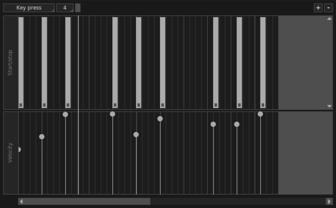
The action editor is a tool that allows you to operate on actions. Here you can alter and modify the existing ones, as well as add new actions from scratch. It represents the actions of a channel and it's composed of several horizontal widgets, each of them containing a specific action type.
All widgets work the same way: you manage them with the mouse and you add, remove or shift the actions by clicking on them.
| action | effect |
|---|---|
| left click on empty area | add an action |
| right click on action | remove an action |
| left click + drag on action | move the action or resize it |
| Ctrl + mouse wheel scroll (Windows and Linux) Cmd + trackpad scroll (macOS) | zoom in/out |
The zoom buttons in the upper right corner of the window allow to magnify or reduce the view of all the widgets. The grid tool 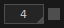 shows a visual grid over the beat cells; the small check button on the right enables snapping.
At the moment the action editor allows to manage the following action types:
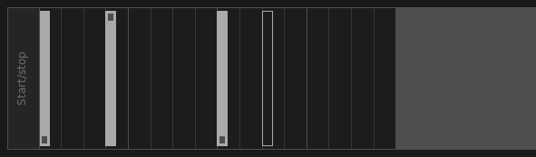
The Start/stop widget works only for Sample channels set in oneshot mode (see Channels and Samples chapter); if you open the editor for a Sample channel set in loop mode, the widget will be disabled. Actions are represented in different ways:
Key press 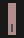 — a single key pressure, usually recorded live with (key);
Key release 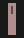 — a single key release;
Stop sample 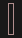 — a sample break, usually recorded live with shift+(key);
Composite action 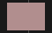 — it represents the combination of a key press + key release and it's available only for channels set to oneshot press mode . It shows the duration of the key pressure and you can resize it by dragging the edges.
The action type selector 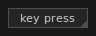, located on the top-left corner of the Action Editor window, changes the action type you would add by left-clicking on an empty area.
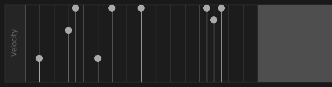
Available for both Sample channels and MIDI channels, the Velocity widget lets you change the overall volume of an action. On MIDI channels, values range from 0 (silent) to 127 (maximum loudness) to match the expected value range defined by the MIDI protocol. Each action has its corresponding point in the velocity widget.
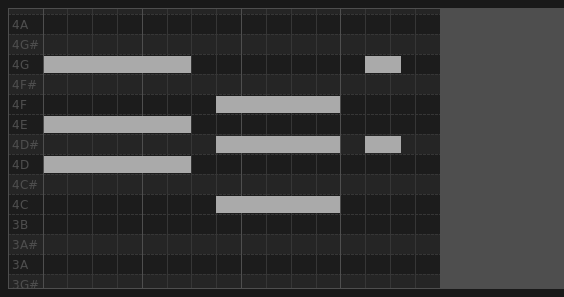
Available only for MIDI channels, the Piano Roll widget handles MIDI notes. It represents the full set of 128 notes (0-127) with 11 octaves ranging from C-1 (or C0) to G9 (or G10).
The piano roll editor is able to cope with wrong MIDI events, such as two Note On next to each other. We call them orphaned MIDI events and they look like an empty rectangle 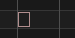 with fixed width. You can't do much with an orphaned MIDI event, except for deleting it by right clicking on it. Useful to clean up a MIDI mess.